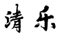

古音阶中的“二变”之一。角音与徵音之间的乐音。《史记·荆轲传》曰：“高渐离击筑，荆轲和歌，为变徵之声，士皆垂泪涕泣。”宋人亦有称变为闰，曰闰徵。在十二律，通常指较徵音下一律之音（相当于#fa）；也有较角音上一律之音（即清角，相当于fa）。有以变徵为主音、结声构成的调（式）名。
古音阶中的“二变”之一。羽音与宫音之间的乐音。宋人有称其为“闰宫”者。在十二律，有指较宫音下一律之音（相当于si），如《后汉书·律历志》云：“黄钟为宫……应钟为变宫”；亦有较羽音上一律之音（相当于bsi），如《晋书·律历志》云“清角之调（音阶）以姑洗为宫，……太簇为变宫”。有以变宫为主音为结声构成的调（式）名。

宫，商，角，变徵，徵，羽，变宫，分别对应1，2，3，升4，5，6，7，变徵是徵音下方的小二度。同样音程关系的音阶，在中古调式中，被称为利地亚调式（Lydian）。特别要说一下。变徵音与宫音形成了一个三全音，（tri-tone），具有很强的扩张性，在所有西方调式中，这是最明亮的调式（比自然大调还要明亮）。
雅乐调式歌曲试听：

宫，商，角，清角，徵，羽，变宫，分别对应1，2，3，4，5，6，7，这与西方的自然大小调相似，清角是角音上方的小二度。变宫是宫音下方的小二度。同样音程关系的音阶，在西方中古调式里，被称为奥尼亚调式（Ionian），或者也可以称为自然大调。
清乐调式歌曲试听：
宫，商，角，清角，徵，羽，闰，分别对应1，2，3，4，5，6，降7，闰是宫音下方的大二度。同样音程关系的音阶，中古调式被称为混合利迪亚调式（mixolydian）。在西方音乐中，混合利迪亚也是属七的调式，具有极强的倾向性与归属感（倾向于向它的四级去解决），向它的四级解决。这个调式，是仅次于自然大调的明亮调式。